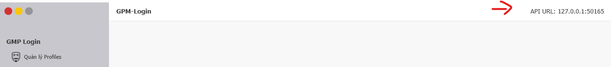

TÀI LIỆU SỬ DỤNG API V2 GPM-LOGIN
Lấy API URL tại tab Tài liệu API trong GPM-Login. Ví dụ: http://127.0.0.1:19955 Luôn phải giữ GPM-Login chạy khi gọi API 
MỞ PROFILE (GET METHOD)
Params
| profile_id | Bắt buộc | Profile ID muốn mở (lấy trên GPM-LOGIN) |
| remote_debug_port | Không bắt buộc | Fixed debug port để remote qua selenium |
| addination_args | Không bắt buộc | Tham số khởi động thêm cho chrome |
Response
{ "status": true, "profile_id": "wm6n5ilgppah8ukqcrmvleyzw1lagq2uq2nlfggfnzwotvvr4y", "browser_location": "D:\\GPM-Login-app\\gpm_browser\\chrome.exe", "selenium_remote_debug_address": "127.0.0.1:62561", "selenium_driver_location": "D:\\GPM-Login-app\\gpmdriver.exe" }
| status | true / false |
| profile_id | Profile ID được chạy (nếu khởi tạo thất bại, trả về null) |
| browser_location | Đường dẫn tới chrome.exe của GPM-Browser |
| selenium_remote_debug_address | Remote debug address để remote selenium |
| selenium_driver_location | Đường dẫn tới gpmdriver.exe |
Test - Bạn có thể gọi ngay trên trình duyệt
http://127.0.0.1:50615/v2/start?profile_id=wm6n5ilgppah8ukqcrmvleyzw1lagq2uq2nlfggfnzwotvvr4y
TẠO PROFILE (GET METHOD)
Params
| name | Bắt buộc | Tên profile hiển thị trên GPM-Login |
| proxy | Không bắt buộc |
Proxy có thể rỗng (without proxy)
Dạng IP:Port, IP:Port:User:Pass (đối với Http Proxy) Dạng socks5://IP:Port, socks5://IP:Port:User:Pass (đối với Socks5 Proxy) |
| group | Không bắt buộc | Mặc định không nhập sẽ là All |
| canvas | Không bắt buộc | Fake canvas : on hoặc off. Mặc định không nhập sẽ là off |
| font | Không bắt buộc | Fake font : on hoặc off. Mặc định không nhập sẽ là on |
| webrtc | Không bắt buộc | Webrtc : on hoặc off. Mặc định không nhập sẽ là on |
| save_type | Không bắt buộc | local hoặc s3. Mặc định không nhập sẽ là local |
Response
{ "status": true, "profile_id": "wm6n5ilgppah8ukqcrmvleyzw1lagq2uq2nlfggfnzwotvvr4y" }
| status | true / false |
| profile_id | Profile ID được tạo trên GPM-LOGIN |
Test - Bạn có thể gọi ngay trên trình duyệt
http://127.0.0.1:50615/v2/create?name=Duy dep zai khoai to&canvas=on&proxy=socks5://127.0.0.1:5001
UPDATE PROXY (GET METHOD)
Params
| id | Bắt buộc | Profile ID |
| proxy | Không bắt buộc |
Proxy có thể rỗng (without proxy)
Dạng IP:Port, IP:Port:User:Pass (đối với Http Proxy) Dạng socks5://IP:Port, socks5://IP:Port:User:Pass (đối với Socks5 Proxy) |
Response
True|False
Test - Bạn có thể gọi ngay trên trình duyệt
http://127.0.0.1:50615/v2/update-proxy?id=fhkisun21hfnass&proxy=socks5://127.0.0.1:5001
UPDATE NOTE (GET METHOD)
Params
| id | Bắt buộc | Profile ID |
| note | Bắt buộc | Nội dung ghi chú |
Response
True|False
Test - Bạn có thể gọi ngay trên trình duyệt
http://127.0.0.1:50615/v2/update-proxy?id=fhkisun21hfnass¬e=Hello
LẤY DANH SÁCH PROFILES (GET METHOD)
Response
[ { "id": "1234", "name": "ebay2", "path": "kGa2j9eWcyhBGKx9AUZ6_24062022", "created_at": "2022-06-24T08:57:02.0088426" }, { "id": "5678", "name": "ebay_reg_001", "path": "Gz9oPCn2hxTR2OF8e8WG_24062022", "created_at": "2022-06-24T08:32:44.1630627" }, { "id": "910jq", "name": "kehuydiet2712it1@yahoo.com", "path": "nnjBSs7L0VMHvJmt083p_16052022", "created_at": "2022-05-16T20:43:53.1926214" } ]
Test - Bạn có thể gọi ngay trên trình duyệt
http://127.0.0.1:50615/v2/profiles
XÓA PROFILE (GET METHOD)
Params
| profile_id | Bắt buộc | Profile ID trên GPM-LOGIN |
| mode | Không bắt buộc | 1 - Chỉ xóa trên app, 2 - Xóa cả trên app lẫn folder profile (Mặc định: 2) |
Response
Luôn luôn trả về: 'OK'
Test - Bạn có thể gọi ngay trên trình duyệt
http://127.0.0.1:50615/v2/delete?profile_id=kqhzw5pchra08m8di0n9jbmkwyndmmuqqdc29tr9j1qfgv9pno